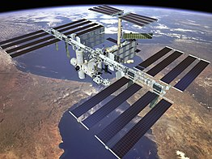

A NASA az Amerikai Egyesült Államok kormányzati ügynöksége, az ország civil repüléstani, űrkutatási és űrrepülési szervezete. A hivatalt 1958-ban hozták létre
Eredeti célja az ország nem katonai űrkutatásának irányítása és a világűr és űreszközök békés felhasználásának ösztönzése volt.
1957. október 4-én látott napvilágot az Egyesült Államokban az a hír, hogy a szovjetek fellőtték a Szputnyik–1 műholdat. A hír megrázta Amerikát, olyannyira, hogy hatását Pearl Harboréhoz hasonlítják.
Ezzel az eseménnyel kezdetét vette a két nagyhatalom (az USA és a Szovjetunió) közötti űrverseny. A válság megoldása gyors intézkedést követelt, ezért egyetlen év leforgása alatt létrehozták a NASA-t.
A NASA szervezetének kezdetben 8000 alkalmazottja és 100 millió dolláros költségvetése volt. Három nagy laboratórium és két kisebb rakétakísérleti telep tartozott a kezelésébe.
Három nagy laboratórium és két kisebb rakétakísérleti telep tartozott a kezelésébe.
Később fokozatosan olvasztotta magába szerte az országban azokat a nagy intézményeket, amelyek a ma működtetett tíz nagy űrközpontból álló hálózat alapját képezték.
Az Apollo-program keretében 1969 és 1972 között 12 űrhajós járt a Holdon. Az emberes űrrepülések terén a Mercury- és Gemini-programok már az előkészületet jelentették az űrkutatás történetének legnagyobb vállalkozásához, a Hold meghódításához.
Az amerikai űrrepülőgépek voltak az első teljesen újrafelhasználható hordozóeszközök.
Összesen hat ilyen űrrepülőgépet építettek meg, melyek közül öt repült a világűrben.
Az Apollo-program lezárása után állították pályára az első, mintegy 80 tonnás amerikai űrállomást, a Skylab-et.
1981-től az űrrepülőgép üzembeállításával új korszak nyílt az emberes űrrepülések történetében.
A végrehajtott 125 repülés során űrhajósok százai dolgoztak a világűrben.
A Mars bolygó emberek által való betelepítésére sok terv született az űrrakéta feltalálása óta.
Azért a Marsot tartják a legalkalmasabbnak kolonizálás szempontjából, mivel itt található víz, és a földihez hasonló gravitáció.
Több szervezet is létrehozott már terveket emberek eljuttatásáról a bolygóra, ami az első lépés lenne a kolonizálás felé, de napjainkig egyetlen űrhajós se jutott még el a Marsra és egyetlen Marsra küldött űreszköz se tért vissza a Földre.
A kolonizálásra terveket országok ügynökségei, mint a NASA, az ESA, a Roszkoszmosz, az ISRO és a CNSA, illetve magáncégek, mint a SpaceX, a Lockheed Martin és a Boeing is közzétettek.
A Mars bolygó gravitációja 38% a Földhöz képest, mely eltérés izomvesztéssel és csontlerakódással jár.
A kolonizálóknak ezen kívül megoldást kell találniuk a nagy hőmérséklet-különbségre, ugyanis a Marson sokkal nagyobb a hőingadozás, ami átlagosan −87 és −5 °C között van.
Az emberekkel történő űrutazás a Marsra önmagában sok nehézséget és veszélyt hordoz a Földközeli űrugrásokhoz képest.
Az emberes Mars-expedíció minden tekintetben nagyobb szabású: Az űrhajó mérete, utazás időtartama, készletek és egészségre káros tényezők mértéke.
A marsi út a legkevesebb energiát használó bolygóközi út a Naprendszerben, a Vénusz kivételével.
Egy Hohmann-pálya segítségével az út a Marsra nagyjából kilenc hónapba telne.
Ennek ellenére az út lerövidíthető négy és hét hónap közötti időtartamra is, más transzfer pályák és több üzemanyag használatával, mint a Hohmann-pályán.
A Mars a Föld gravitációjának 38%-ával rendelkezik és légköre sűrűsége bolygónkénak 0,6%-a.
A relatív erős gravitáció és a bolygó aerodinamikai körülményei miatt nehéz nagy súlyú, személyzettel rendelkező űreszközzel leszállni a Marsra, csak manőverező rakéták használatával, mint azt az Apollo-program idején tették a Holdon.